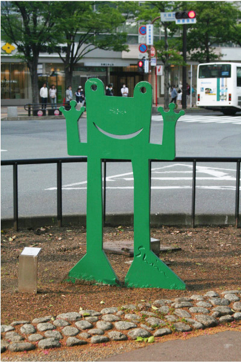

松永 真

ここではグラフィック・デザイナー松永真氏が手がけたアート作品５点を紹介する。
それぞれの名称は、上の作品画像の左から順に『平和の門』『顔が西向きゃ尾は東』
『大きな一歩』『見晴し台』『おかえり』。それぞれの作品は薄い鉄板をアイコニックな
形に切り取ったような作品で、立体感があまり無い。二次元のイラストをそのまま
現実世界に生み出したようで、グラフィック・デザイナーらしい作品だ。松永氏は
70年代からロゴマークやポスターのデザインを手がけ、その業績は数々の企業、団体の
ロゴマークとして今日に残されている。ベネッセ、Calbee、BANDAI、KAGOMEなど
私たちにも印象強く残っているロゴを彼が制作した。これら彼がデザインしたロゴと
照らし合わせ、この作品を鑑賞すると、彼のポップで鮮やかな作風が感じられる。